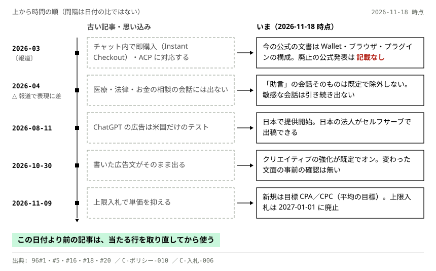

[ ChatGPT / 96 ]
96意外な点とよくある誤解
位置づけ: Google 広告の知識ベースの「裏取りで覆った思い込み」に当たる表。とくに「Google と同じ言葉で意味が違うもの」「Google の常識を持ち込むと間違えるもの」「古い情報」を集めた
このメモについて
- 確認日: 2026-11-18（出典の番号は
95_出どころ一覧.md） - 位置づけ: Google 広告の知識ベースの「裏取りで覆った思い込み」に当たる表。とくに「Google と同じ言葉で意味が違うもの」「Google の常識を持ち込むと間違えるもの」「古い情報」を集めた
- 使い方: 確認日から 30 日を過ぎていたら取り直す。この媒体は変化が速く、「古い情報」の行は 1 か月で増える
- 凡例: ✓ 公式で確認 ／ △ 資料によって食い違う ／ ? 確認できず。〔公式・抜粋〕は公式ページだが本文を読めず検索結果の抜粋で確認したもの
地図
本文
1.思い込みと実際

キーワード・上限入札・入札戦略の切り替え・月でならす予算・人が見られる LP・MCC の 6 つは、Google では当たり前だが ChatGPT の広告ではそのまま通らない。引き継いだ手順書や自動化の道具がこれらを前提にしていないかを最初に確かめ、とくに旧来の上限入札の欄を送る道具は年内に直す。
出典: 96#3・96#5・96#6 ほか 15 件 · 2026-11-18 時点

ChatGPT の広告は 2026 年の間に、決済・出ない会話・提供国・自動の書き換え・入札が日付つきで変わったので、半年前の記事は前提が違うことが多い。記事や他社の資料を使う前に発行日をこの日付と比べ、またぐなら 61§5 の URL で取り直す。
出典: 96#1・96#5・96#16 ほか 12 件 · 2026-11-18 時点
思い込みChatGPT の広告は米国だけのテスト
実際2026-08-11 に日本で提供開始。10-21 時点で 89 か国。日本の法人は Ads Manager でセルフサーブで出稿できる（日本は「Available」）
#: 1 ／ 印と出典: ✓〔公式・抜粋〕S-11、S-17、S-32 ／ 運用で効く場面: 「まだ日本では無理」と提案から外さない
思い込みAI の回答の中に自社が薦められるように広告を買える
実際広告は回答の下に「スポンサー」と分けて出る。選択は回答の生成と別の仕組みで並行して行い、回答に影響しないと OpenAI は約束している
#: 2 ／ 印と出典: ✓〔公式・抜粋〕S-30、S-18 ／ 運用で効く場面: 「AI に推薦させる施策」として売らない。回答の中に出たいなら広告ではなく、サイトの情報・クローラーの許可・商品データの側
思い込みキーワードを入れて配信をコントロールする
実際キーワードは無い。「文脈ヒント」は完全一致のキーワードではなく、配信を保証しない。地域やオーディエンスの指定の代わりにもならず、「特定の顧客層に届けたいだけでは関連性にならない」（S-44）。除外キーワードに当たるのは、資格のある一部の広告主だけの Negative Phrases
#: 3 ／ 印と出典: ✓公式S-01、S-44・S-31（本文、23§6・§7） ／ 運用で効く場面: 検索広告のキーワード設計表をそのまま移さない。ヒントは「商品＋使い方＋ニーズ」を具体文で書く
思い込みコンバージョン目的なら成果ごとに課金される
実際最適化は成果、課金は有効なクリック（oCPC）か 1,000 表示（oCPM）を選ぶ。成果ごとには払わない。目標 CPA は請求額ではない
#: 4 ／ 印と出典: ✓公式S-34・S-36（本文確認）、S-01 ／ 運用で効く場面: 「CPA 保証」の説明をしない。費用対効果は費用 ÷ 成果で自分で出す
思い込み「上限入札（Max Bid／Max CPC）」で単価を抑えられる
実際2026-11-09 から新規は目標 CPA／目標 CPC（平均の目標）。上限入札は 2027-01-01 に廃止。API の旧フィールドに送った値も「平均の目標」として扱われるようになった
#: 5 ／ 印と出典: ✓〔公式・抜粋〕S-36（△ 開発者文書は旧方式のまま S-01） ／ 運用で効く場面: 既存キャンペーンは年内に移行。自動化の道具が旧フィールドで上限を送っていると、意味が変わっている
思い込み目的は後から切り替えられる（Google のように手動 → 目標 CPA）
実際キャンペーンの目的と、コンバージョン最適化のイベントは作成後に変えられない。変えるなら作り直し。複製は別の目的か別の課金方法のキャンペーンを作るときだけ使え、同じ目的のままは複製できない
#: 6 ／ 印と出典: ✓公式S-01、S-34（本文、02§2-2） ／ 運用で効く場面: 最初にクリック用とコンバージョン用を別のキャンペーンで設計する
思い込み1 日の予算はその日の上限
実際7 日（日曜〜土曜）の平均。1 日は 2 倍、週は 7 倍まで。Google の「月 30.4 倍」と違い週でならす。週の枠を早く使い切ると「有効」のまま次の週まで止まることがある
#: 7 ／ 印と出典: ✓公式S-35・S-34（本文、94#15・02§7-2）（Google は 02） ／ 運用で効く場面: 月末の調整は週の境目を見る。△ 開発者文書の項目名は「1 日の費用の上限」のまま
思い込み最低出稿額は無い／25 ドル
実際通貨ごとに違う。日本円の請求なら 1 日 2,500 円
#: 8 ／ 印と出典: ✓〔公式・抜粋〕S-34（△ 日本の解説記事に 25 ドルとするものあり） ／ 運用で効く場面: 少額テストの下限は月 7〜8 万円規模〔推測〕
思い込み有料プランの人にも出る
実際出るのは無料版と Go のログインした成人だけ。Plus・Pro・Business・Enterprise・Edu には出ない
#: 9 ／ 印と出典: ✓〔公式・抜粋〕S-11、S-30 ／ 運用で効く場面: B2B の決裁者層（会社の Business・Enterprise）には届かない前提で目的を置く
思い込みGo の人も広告を消せる
実際「広告なし」は無料版の選択肢（使える回数が減る）。Go は対象外
#: 10 ／ 印と出典: ✓〔公式・抜粋〕S-30 ／ 運用で効く場面: 到達の母数は「無料版のうち広告なしを選ばなかった人＋Go」
思い込み会話の中身から細かく狙える／広告主は会話を見られる
実際広告主に渡るのは集計の数字だけ。会話・履歴・記憶・氏名・メール・正確な位置・IP は渡らない。検索語句レポートに当たる列も無い（62#7）。△ 広告を通じた会話だけは書き方が合わない: 利用者向けヘルプは「広告を通じて直接送ったメッセージは広告主が見る」、エージェントのヘルプは「広告主は個々のチャットを受け取らない」（05§9-4）
#: 11 ／ 印と出典: ✓〔公式・抜粋〕S-11、S-30、△ S-49 ／ 運用で効く場面: 「どんな会話で出たか」を前提にした改善の報告は作れない。LP 側の分析で補う
思い込み記憶（メモリ）は広告に使われない
実際利用者が広告のパーソナライズをオンにしていれば、記憶・過去のチャット・広告への反応も使う。オフでも今の会話の文脈では出る
#: 12 ／ 印と出典: ✓〔公式・抜粋〕S-30 ／ 運用で効く場面: 「今の会話だけ」と説明すると誤り
思い込みビュースルーは別の列（Google と同じ）
実際表示後の窓を 1 日にすると「コンバージョン」の合計に入る（0 日なら入らない）。別の列でも見られる。窓の変更はレポートだけに効き、最適化・入札・課金は変わらない
#: 13 ／ 印と出典: ✓公式本文 ／ 運用で効く場面: Google の数字と並べるときは窓を 0 日にそろえるか、クリックスルーの列で比べる
思い込み商品フィードを出せば日本でもショッピング広告ができる
実際OpenAI 形式の標準のアップロードは今は米国向け（共通形式が表せる国は US・CA・MX）。日本向けは ?
#: 14 ／ 印と出典: ✓公式S-03 ／ 運用で効く場面: 日本の EC は標準の広告で商品ページへ。フィード前提の計画は保留
思い込みChatGPT の商品の表示は広告枠
実際自然な商品の結果は ChatGPT が独自に選び、広告ではないと説明。広告は別に「スポンサー」と表示
#: 15 ／ 印と出典: ✓〔公式・抜粋〕S-51 ／ 運用で効く場面: 「商品が出た＝広告の効果」と混ぜない
思い込みInstant Checkout（チャット内で即購入）と ACP に対応すればよい
実際〔報道〕2026-03 にチャット内の直接決済を縮小。今の公式のコマース文書は ChatGPT Wallet（加盟店の既存の決済画面で払う）・クラウド ブラウザ・プラグインの構成で説明し、Instant Checkout の語が無い。廃止の公式発表は ?
#: 16 ／ 印と出典: 〔報道〕R-05、✓公式S-03 ／ 運用で効く場面: 古い記事の「ACP を実装せよ」をそのまま勧めない
思い込みLP は人が見られれば審査に通る
実際OpenAI のクローラー（OAI-AdsBot）が読めないと通らない。Cloudflare などで 403 を返すと不可
#: 17 ／ 印と出典: ✓〔公式・抜粋〕S-48 ／ 運用で効く場面: 出稿前に robots.txt と WAF を点検。LPO ツールで出し分けている LP は、クローラーに何が見えるかも確かめる〔推測〕
思い込み書いた広告文がそのまま出る
実際「クリエイティブの強化」が既定で有効（2026-10-30 から。営業管理のアカウントは対象外。変わった文面を事前に 1 本ずつ見る手段は無い）。見出し・説明の書き換え、翻訳、画像の調整、リンク先の変更を確認なしで行う
#: 18 ／ 印と出典: ✓公式S-43（本文。開始日の食い違いは 10-30 で解決）、〔報道〕R-06（05§6） ／ 運用で効く場面: 表現の規制がある業種は出稿前にオプトアウト
思い込み健康・金融の広告も審査を通せば出せる
実際米国外の金融・健康は原則禁止（ポリシー）。ヘルプの国別の表では、米国外でも健康のソフトウェアとインフラ・金融ソフトウェアは可、預金・カード・保険・ローン・投資は承認済みの特定の広告主だけ（今は申請を受け付けていない区分がある）、暗号資産・個人ローン・BNPL・送金などは米国外は不可。サプリ・生理用品はポリシーと表で書き方が違う △
#: 19 ／ 印と出典: ✓公式S-19・S-46（本文、94#19・31§2-2・34§2-3）、△ サプリなど ／ 運用で効く場面: 日本のクリニック・健康食品・金融は当面対象外として扱う。予約システム・会計ソフトなどのソフトウェアは出せる余地がある
思い込み医療・法律・お金の相談の会話には一切広告が出ない
実際2026-04 から「助言」の会話そのものは既定で除外しなくなった。敏感な会話（心の健康・個人の健康など）は引き続き不可
#: 20 ／ 印と出典: △〔公式・抜粋〕S-19（報道で表現に差） ／ 運用で効く場面: 古い記事の「医療・金融の話題には出ない」は更新が要る
思い込みカスタム オーディエンスは少人数でも使える
実際含める・入札の倍率に使うには照合後 25,000 人以上（公式の推奨は 10 万人以上）。除外は下限なし。含めると除くを両方使うと除外が優先し、残りが 25,000 人以上要る。EEA・スイスでは使えない
#: 21 ／ 印と出典: ✓公式S-01、S-57（本文、23§5） ／ 運用で効く場面: 小さな顧客リストは「除外」にだけ使う
思い込み代理店がまとめて管理できる（MCC のように）
実際広告主ごとに別アカウント。自分で作れるのは所属 10 アカウントまで。新しいセルフサーブのアカウントは最初は自国だけに出せる場合がある
#: 22 ／ 印と出典: ✓〔公式・抜粋〕S-39、S-32 ／ 運用で効く場面: 多国展開・多アカウントは営業窓口かパートナー経由を検討
思い込み一般提供（GA）になった
実際公式は 2026-11 でも「テスト」「パイロット」、Ads Manager は「ベータ」と書いている
#: 23 ／ 印と出典: ✓〔公式・抜粋〕S-11、S-33 ／ 運用で効く場面: 仕様の変更の頻度を前提に、月 1 回は出典を取り直す
思い込み「Maximize Results」で通じる
実際ヘルプでは「Intelligent bidding」に名前が変わった（API の値は maximize_clicks／maximize_conversions のまま）
#: 24 ／ 印と出典: △〔公式・抜粋〕S-36、公式S-01 ／ 運用で効く場面: 旧称・新称を併記して記録する
思い込み一時チャットでも広告が出る
実際一時チャットには出ない。18 歳未満（申告か予測）にも出ない
#: 25 ／ 印と出典: ✓〔公式・抜粋〕S-30、S-53 ／ 運用で効く場面: 到達の母数の見積もりから外す
変更の記録
- 2026-11-18 初版
- 2026-11-18 第 5 段（仕上げ）: 各論の本文確認と 94 に合わせて直した — #3（S-44 の「顧客層だけでは関連性にならない」と Negative Phrases）、#6（複製の使い方）、#7（週の枠を使い切ると止まる、印を本文に）、#11（広告を通じた会話の △、検索語句の列が無いことは画面で確認）、#18（印を ✓ 本文に）、#19（米国外の例外と暗号資産、サプリなどの △）、#21（推奨 10 万人、含める＋除く）。各行に各論の節への参照を足した
[ 元 ] ChatGPT広告の基礎/96_意外な点とよくある誤解.md